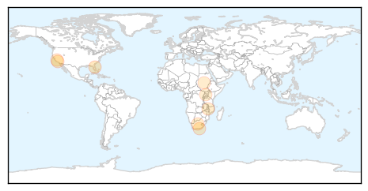

Measles
30-Day Web Trend
3 alerts, 2 warnings

30-Day Twitter Trend
0 alerts, 0 warnings

Article Locations
Article Confidences

Top Articles:
- 0.739
- Aggressive vaccination effort reduces transmission of measles among North American Amish communities
- 0.672
- Public health suffers if vaccines are not accessible
- 0.654
- www.mpacorn.com
- 0.619
- A discussion of vaccines, "the single most life-saving medical innovation ever in the history of medicine”
- 0.608
- Zimbabwe to conduct first HIV vaccine trial - Xinhua
- 0.607
- Zimbabwe to conduct first HIV vaccine trial
- 0.575
- Sudan's other crisis (Opinion)
- 0.570
- West and Central Africa Region Weekly Humanitarian Snapshot (14 - 22 July 2015) - Niger
Top Tweets:
-
No tweets found for Jul 24, 2015
Cholera
30-Day Web Trend
0 alerts, 0 warnings

30-Day Twitter Trend
3 alerts, 0 warnings

Article Locations

Article Confidences

Top Articles:
- 0.989
- Curbing cholera catastrophe ravaging states
- 0.973
- 5 pandemics that plagued mankind
- 0.655
- ACCESS TO TOILETS IN AFRICA, Articles
- 0.623
- Read this and ask how is it Tony Blair and George Bush are not behind bars
- 0.601
- Ludhiana has several places with same names
- 0.588
- Sudan: Sinnar State takes precautionary measures to prevent spread of cholera from the State of South Sudan
Top Tweets:
-
No tweets found for Jul 24, 2015